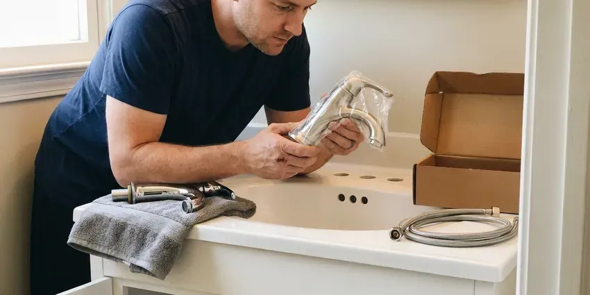

Sink Repair in Spring Hill, TN
Licensed plumbers for sink leaks and clogs in Spring Hill, TN, with a fixed price before any wrench turns.
- Same-Day Service Most Days
- Licensed & Insured
- Labor Guaranteed
- Kitchen and Bath Sinks

Get Your Sink Working Again in Spring Hill, TN
Most sink repairs take a single trip, and we test the fix with the water running.
Sink Problems We Fix Every Day in Spring Hill, TN
BGV Plumbing repairs sinks in Spring Hill and the towns around it, mostly kitchen and bathroom units with leaks or slow drains. Nine times out of ten we find a flattened slip-joint washer or a cracked trap, but we check the supply lines, the angle stops, the faucet base and the drain flange before we decide. Most jobs take an hour or two. Parts for common sinks ride on the truck.
Our expertise includes:
- Swap failing braided supply lines with fresh stainless connectors
- Reset loose undermount and vessel bowls
- Reseal leaking drain flanges and overflow gaskets

Additional Bathroom Plumbing Services in Spring Hill, TN
From toilets to showers, our bathroom plumbing team in Spring Hill, TN handles repairs, installs, and upgrades with tidy, code-compliant work.




Spring Hill faucet installation specialists


Customers
Why Choose BGV Plumbing for Sink Repair in Spring Hill, TN?
Small drips and full rebuilds get the same attention. Some days it is one washer, and other days it is a rusted-out drain body and a seized shutoff that has to be cut out. Either way, the water runs before we pack up.
- Fix the Cause, A new washer on a misaligned trap fails again, so we align the trap first.
- Licensed Plumbers, Licensed plumbers do the work, not helpers working alone.
- Honest Diagnosis, You see the failed part before we replace it.
Citywide Coverage
We cover all of Spring Hill and the towns around it. Older neighborhoods with galvanized stubs and newer subdivisions with PEX get the same response time and the same flat-rate pricing on sink work. Our trucks are spread out across town.
Experienced Team
Clean habits are part of the job. Our plumbers lay a mat in the cabinet, wear shoe covers in the house, and wipe the counter down before they leave. Old parts leave with us.
Safety-First Approach
Corroded drains have sharp edges. Old chrome traps and steel drain bodies can tear when we remove them, so our plumbers wear cut gloves and eye protection and keep kids and pets clear of the cabinet. Any chipped porcelain gets swept up.
Trusted Certified Spring Hill Plumbing Services Professionals
At BGV Plumbing, we are proud to offer certified plumbing services throughout Spring Hill, TN. Those papers on the wall mean something. Our plumbers hold recognized industry credentials, and they follow strict safety and quality rules on every repair, installation and maintenance call we run.
Call Us Now PHCC Plumbing Contractor Recognition
PHCC Plumbing Contractor Recognition Better Business Bureau (BBB) Accreditation
Better Business Bureau (BBB) Accreditation Angi Certified Pro
Angi Certified Pro ISO 9001 Quality Management Certification
ISO 9001 Quality Management CertificationCommon Sink Repairs in Spring Hill, TN
Emergency Sink Repair in Spring Hill, TN
Shut the angle stops first. Turn both oval handles under the sink clockwise until they stop, and if they spin freely or keep weeping, go to the main shutoff and close it before calling us. We send active leaks to the front of the line. The plumber brings stops and supply lines to stop it on the first visit.

Leaking P-Trap Fix in Spring Hill
Check the slip nuts first. Overtightened plastic slip nuts crack, and the beveled washers inside them flatten until each joint weeps. The whole trap gets replaced as a kit. A 1-1/4 inch kit for bath sinks, 1-1/2 inch for kitchens.
Cracked or Loose Basin Repair in Spring Hill
Undermount clips let go more often than people think. Failed epoxy lets the bowl sag a little, the caulk splits, and counter water runs right into the cabinet. We reset the bowl on new clips. Hairline cracks in porcelain near the drain mean replacement.
Faucet Base Leak Repair in Spring Hill
Water pooling around the faucet base is a different leak than a drip from the spout. That points to worn O-rings on the spout or a bad base gasket, and sometimes to a cracked faucet body that cannot be rebuilt. Each faucet style rebuilds its own way. We identify yours before ordering parts.
Overflow and Drain Flange Leak Repair in Spring Hill, TN
Some leaks only show up when the bowl is full. That points to the overflow gasket or the putty under the drain flange, since neither one sees water during a quick hand wash but both get soaked when you fill the sink. We pull the drain and reseal it. Marble and some granite get silicone, because putty can stain them.
Recurring Sink Clog Repair in Spring Hill, TN
Monthly clogs have a cause past the trap. We look past the wall with a longer cable or a camera for a sag or for buildup where the sink line meets the tub. Sometimes the vent is blocked. A sink that gurgles as it drains is the giveaway.
Low Water Pressure at the Sink in Spring Hill, TN
Unscrew the aerator before anything else. Most single-faucet pressure problems are a packed aerator screen, and after that we look at the cartridge and the angle stop for debris. Whole-house low pressure is another call. We test the pressure regulator in that case.

Sink Parts Replacement in Spring Hill, TN
Most sinks do not need replacing. Swapping a tailpiece or pop-up costs far less than a new sink, and you keep the bowl and faucet you already have. We match finish where we can. Discontinued faucets sometimes force a full faucet swap.
Finding Sink Repair Near Me in Spring Hill, TN
Water chemistry varies from town to town. Mineral buildup from harder water can wear out water heaters and leave scale on faucets, showerheads and dishwasher parts. We know which cartridges and stops scale up first around here and which brands hold up, so the right part goes in the first time. That keeps repeat visits down.
Near me should mean today, not next Thursday. Most sink calls we book before noon get a plumber the same afternoon, and late calls go first on the next morning's schedule. A real person answers the dispatch line. The number is (615) 518-0893.
BGV Plumbing at a Glance
- Licensed and insured plumbers serving Spring Hill, TN
- Same-day appointments and 24/7 emergency response
- Upfront, flat-rate pricing before work begins
- 4.9-star rated by 932+ Tennessee customers
Spring Hill Map
Spring Hill Information
- Population
- 57,637
- Area codes
- 931/615/731
- Service area
- Spring Hill and towns within a 40 mile drive
- Nearby
- Franklin, Smyrna, Murfreesboro, Nashville
Older drain lines in Spring Hill, TN may collect roots and buildup past the wall, which shows up first as a sink that burps and drains slow.
Talk to a Plumber
Call BGV Plumbing for reliable plumbing work done by licensed pros in Spring Hill, TN.
Our Specialized Plumbing Services in Spring Hill, TN
At BGV Plumbing, you get every kind of plumbing service from one company across Spring Hill, TN. We go from leak detection all the way to full system installations, for homes and commercial buildings, and we do it quickly at a fair price. Explore our core services below:


What Happens on a Sink Repair Call in Spring Hill, TN
Here is how a sink repair call works from the first phone call to a dry cabinet.
Call or Book Online
Call (615) 518-0893 or use the form and describe the leak or clog. We set a time that fits your day.
Diagnosis and Flat Price
The plumber runs water and finds the source, then gives you a flat price in writing.
Repair and Leak Test
We fix it with quality parts, run the water hard and wipe down the cabinet.
Frequently Asked Questions About Sink Repair in Spring Hill
Expect $150 to $450 for most jobs. A leaking P-trap or a new aerator is a quick, low-cost fix, while deep drain clearing or a faucet cartridge replacement takes more labor and more parts. The written quote comes before any work.
We would skip it. Caustic cleaners eat at old chrome and steel traps, rarely dissolve a hair clog all the way, and leave a pool of chemical in the trap for whoever opens it next. A hand auger works better.
Look under the sink twice a year. Feel for moisture at the trap and lines, and turn the stops now and then so they do not seize. It takes two minutes.
Not really. They can damage glue joints and old metal traps and rarely clear hair clogs. Enzyme products are a milder choice.
Most take one to two hours. A trap or supply line swap can be done in under an hour, while a disposal replacement or a full drain rebuild with a stuck flange can stretch past two. We tell you the time up front.
Pretty much all of them. We fix kitchen and bath sinks of every material and mount, plus laundry and utility tubs. We do commercial sinks as well.
Gurgling means air is being pulled through the trap. It usually means a partly clogged drain or a plugged vent, and either one can siphon the trap and let sewer gas in. We usually find it with a drain cable.
Most carry the manufacturer's warranty. Major-brand cartridges often carry lifetime coverage, and traps and lines have shorter terms. The invoice lists each part's coverage.
What People Are Saying About Our Plumbing Experts?

Daniel K.
A pipe burst in the garage ceiling at 11 at night. Someone answered on the second ring, and the plumber was in my driveway about fifty minutes later. He shut off the main, cut out the split section, and had water back on before 2 am.
Emergency Plumbing · Murfreesboro, TN
Karen W.
After our third pinhole leak in copper, we stopped patching. BGV Plumbing gave us a written plan room by room and repiped the house in PEX while we stayed in it. The crew covered our floors every morning and cleaned up every night.
Repiping · Nashville, TN
Jessica T.
We were adding a gas range in a kitchen remodel and needed a new line run from the meter. The plumber pulled the permit, ran the pipe through the crawl space, and had it inspected and approved within the week.
Gas Line Repair · Gallatin, TNMonica A.
Our water bill nearly doubled in one month with no change in how we used water. The tech checked the meter, heard the leak under the hallway with his equipment, and opened a hole about a foot square. Fixed the same day.
Slab Leak Repair · Spring Hill, TN
Megan L.
Our upstairs tub drained so slowly that every shower turned into a bath. BGV Plumbing pulled a wad of hair out of the stopper and then snaked the line past the trap. Three months later it still drains fast.
Drain Cleaning · Smyrna, TNSofia M.
Two new toilets went in during one visit. The tech set them on new wax rings and swapped the old supply lines. He also noticed our bathroom faucet dripping and replaced the cartridge while he was there. No mess left behind.
Toilet Installation · Nashville, TN